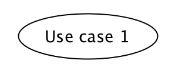
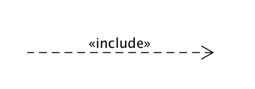
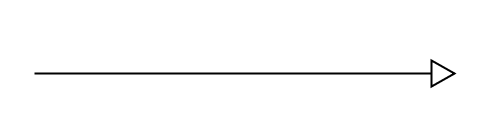
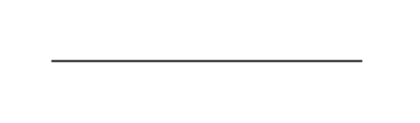
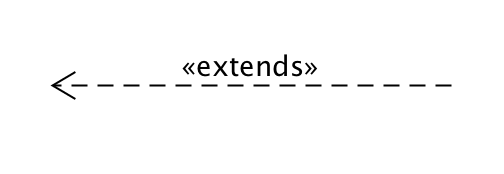

简答题
用例的概念
用例就是一组相关的成功和失败场景集合，用来描述参与者如何使用系统来实现其目标。
用例和场景的关系？什么是主场景或 happy path？
用例和场景的关系
每一个用例包括了许多个场景，场景中包含了用户是如何与系统进行交互，即谁可以利用系统做什么事情。
主场景（happy path）
主场景：也被称为“理想路径”场景，或更为朴实的“基本流程”及“典型流程”。它描述了满足涉众关注点的典型成功路径。要注意的是，它通常不包括任何条件或分支，这是为了保持连贯性，并且将所有的条件处理都延迟到扩展部分。这种具有争议的做法更易于理解和扩展。
用例有哪些形式？
用例能够以不同形式化程度或格式进行编写：
- 摘要 —— 简洁的一段式概要，通常用于主成功场景。
- 非正式形式 —— 非正式的段落格式。用几个段落覆盖不同场景。
- 详述 —— 详细编写所有步骤及各种变化，同时具有补充部分，如前置条件和成功保证。
对于复杂业务，为什么编制完整用例非常难？
对于复杂的业务来说，参与者的相对较多，系统交互也会非常复杂，需要考虑的备选流也非常复杂，这将会是一个非常庞大，场景众多的用例，因此对于这样的业务，我们要编制一个完整的用例是非常困难的，因为我们很难做到完整的覆盖所有可能的场景。
什么是用例图？
- 用例图是指由参与者、用例、边界以及它们之间的关系构成的用于描述系统功能的视图。
- 用例图是外部用户（被称为参与者）所能观察到的系统功能的模型图。用例图是系统的蓝图。
- 用例图呈现了一些参与者，一些用例，以及它们之间的关系，主要用于对系统、子系统或类的功能行为进行建模。
用例图的基本符号与元素？
参与者：表示的是一个系统用户，也就是与应用程序进行交互的用户、组织或者外部系统。

用例：表示的是对系统提供的功能、服务的一种描述。

用例之间的关系：
包含关系: 表示用例可以简单地包含其他用例所具有的行为，并把它所包含的用例行为作为自身行为的一部分。在UML中常用带箭头的虚线表示，箭头指向被包含的用例。

泛化关系: 泛化指的是一个父用例可以被特化形成多个子用例，而父用例和子用例之间的关系就是泛化关系。在UML中用空心三角箭头的实线表示，箭头指向父用例。

关联关系: 表示的是参与者与用例之间的关系。在UML中常用一条直线，或者是一条带箭头的线条来表示，箭头指向信息接收方。

扩展/延伸关系: 表示在一定条件下，把新的行为加入到已有的用例中，获得的新用例叫做扩展用例，原有的用例叫做基础用例，相当于为基础用例提供一个附加功能。在UML中用带箭头的虚线表示，箭头指向基础用例。

系统边界： 用来表示正在建模系统的边界。边界内表示系统的组成部分，边界外表示系统外部。系统边界在画图中用方框来表示，同时附上系统的名称，参与者画在边界的外面，用例画在边界里面。

用例图的画法与步骤
- 确定研讨的系统
- 使用用例图 System 框 表示一个待研究的系统
- 正确命名系统或子系统
- 识别 Actors
- 识别使用系统的主要参与者／角色
- 使用用例图 actor符号 表示，通常放在系统的左边
- 识别系统依赖的外部系统
- 使用用例图 Neighboursystem 框 表示用例依赖的外部系统、服务、设备，并使用构造型识别
- 识别使用系统的主要参与者／角色
- 识别用例（服务）
- 识别用户级别用例（user goal level）
- 识别子功能级别的用例（sub function level）
- 正确使用用例与子用例之间的关系
- \<\
> 表示子用例是父用例的一部分，通常强调离开这个特性，父用例无法达成目标或失去意义！ - \<\
> 表示子用例是父用例的可选场景或技术特征。
- \<\
- 建立 Actor 和 Use Cases 之间的关联
- 确定研讨的系统
用例图给利益相关人与开发者的价值有哪些？
- 对于利益相关人：
- 可以直观看到系统的结果和用户的功能体验，保证系统按照用户的需求进行设计。
- 用例能够根据需要对复杂程度和形式化程序进行增减调节，即能够响应用户（利益相关人)提出的需求，而用例图则使得这种调节更加便利，可以通过修改图形间的关系实现。
- 对于开发者来说：
- 用例图是设计者设计过程的结论与参考，设计者与开发者之间的交流工具，开发者开发过程的蓝图。
- 用例图使得开发者能够更明确地获得需求，更好地理解需求。
- 用例图可以指导开发和测试，同时可以在整个过程中对其他工作流起到指导作用。
- 对于利益相关人：
建模练习题（用例模型）
选择2-3个你熟悉的类似业务的在线服务系统（或移动 APP），如定旅馆（携程、去哪儿等）、定电影票、背单词APP等，分别绘制它们用例图。并满足以下要求：
- 请使用用户的视角，描述用户目标或系统提供的服务
- 粒度达到子用例级别，并用 include 和 exclude 关联它们
- 请用色彩标注出你认为创新（区别于竞争对手的）用例或子用例
- 尽可能识别外部系统和服务


然后，回答下列问题：
为什么相似系统的用例图是相似的？
因为相似的系统他们所实现的功能都是类似的，这就使得他们的用例图大部分都是一样，只有少数出彩的地方会不同。对于买电影票，由于主要就是选择影片、影院、场次和座位，就能够完成电影票的购买。因而用户的需求导致了用例的共性，而相似的系统满足的用户需求是相同的。
如果是定旅馆业务，请对比 Asg_RH 用例图，简述如何利用不同时代、不同地区产品的用例图，展现、突出创新业务和技术
不同时代用户的需求不同，Asg_RH用例图主要满足的是用户基本需求，如今的产品则综合考虑了更多功能，更加人性化。现在可以在用例图中突出更加人性化的体验，比如自动推荐等功能。
如何利用用例图定位创新思路（业务创新、或技术创新、或商业模式创新）在系统中的作用
使用不同的颜色来标记创新思路可以快速定位其在用例图中的位置，利用创新思路在用例图中的位置可以看出它在系统中的作用。如果把用例图看成一棵树，则位于越靠近根的创新思路作用越大。
请使用 SCRUM 方法，选择一个用例图，编制某定旅馆开发的需求（backlog）开发计划表
| ID | Name | Imp | Est | How to demo |
| :— | :————— | :— | :— | :———————————————————– |
| 1 | find hotel | 10 | 5 | 根据酒店名、地点查找酒店，输入目的地、日期等相关信息后获取匹配的酒店列表 |
| 2 | make reservation | 10 | 5 | 选择酒店、房间并确认 |
| 3 | login | 20 | 3 | 建立用户账户信息数据库，与第三方软件绑定实现多种方式登陆 |
| 4 | manage basket | 7 | 3 | 用户查看订单，并可以进行修改 |
| 5 | pay | 8 | 3 | 在完成登陆后可以支付订单费用，需要用到不同支付方式的api |根据任务4，参考 使用用例点估算软件成本，给出项目用例点的估算
| 用例 | 业务 | 计算 | 原因 | UC比重 |
| :————— | :— | :— | :— | :—– |
| find hotel | 3 | 3 | | 简单 |
| make reservation | 4 | 4 | | 一般 |
| login | 2 | 1 | | 简单 |
| manage basket | 4 | 3 | | 一般 |
| pay | 3 | 1 | | 简单 |


评论加载中